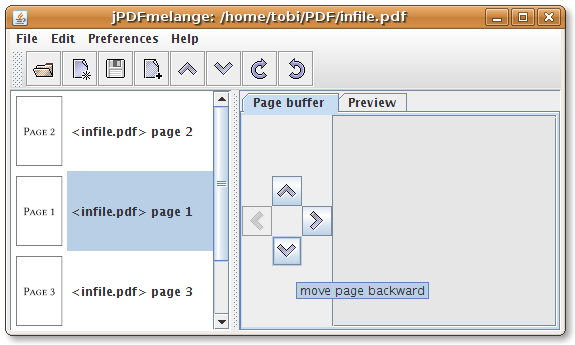
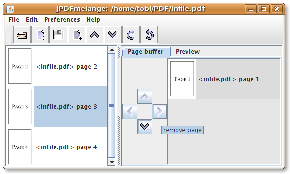
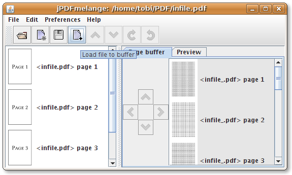
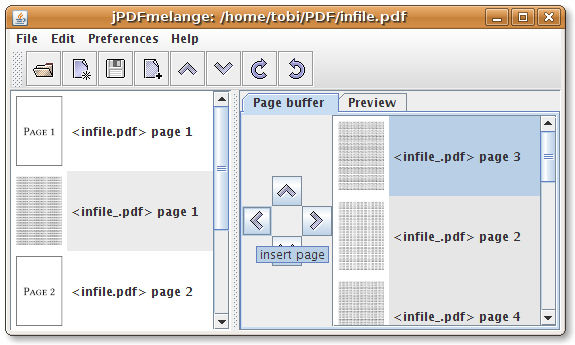
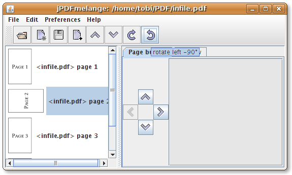
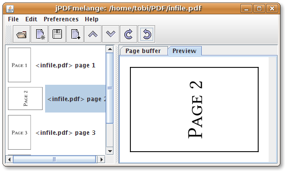

Changing the page order
Use the button with the "up arrow" or "down arrow" to change the position
of a page in your document.
Or simply Drag and Drop the selected pages to a new position.

Removing pages
Use the buttons with the "right arrow" to remove pages from your document.
Or Drag and Drop it to the buffer list.
Or Use the delete key.
Removed pages are copied to the page buffer.

Merging files
Use the "add file" button to load files to the page buffer.
Or simply use your file manager to Drag the files and Drop it to the main or buffer list.

Select the pages to merge and use the "left arrow" button to execute.
Or simply Drag and Drop the file from the buffer list to the main list.

Changing the orientation of pages
Use the "clockwise arrow" or "counter-clockwise arrow" buttons
to rotate the selected page in 90° steps.

Previewing
Use the preview tab to check the orientation or content of a selected page.

Backup copy
Whenever you save a file, jPDFmelange creates a backup copy of
the file with its previous state.
The backup file is stored in the same directory like the source file and
with the extension ".bak".
If you need to restore the previous state, simply rename the backup copy
<name_of_your_file.bak> to <name_of_your_file.pdf>.
|